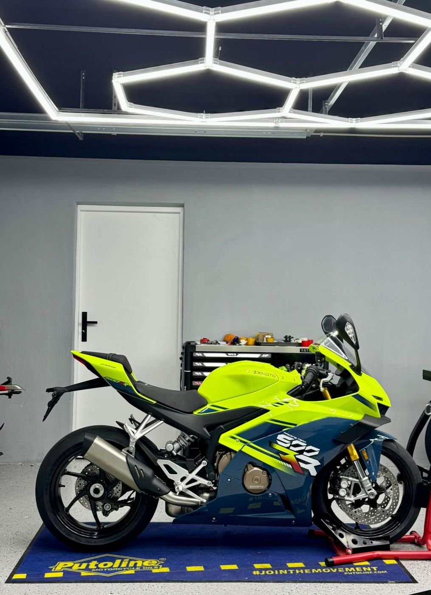
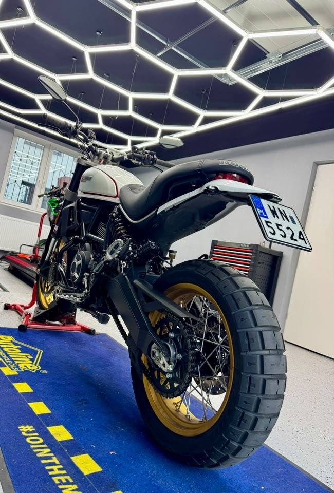
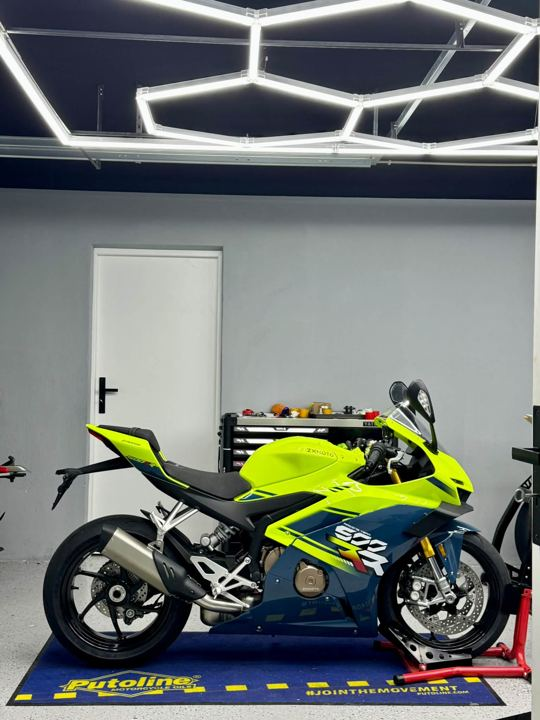
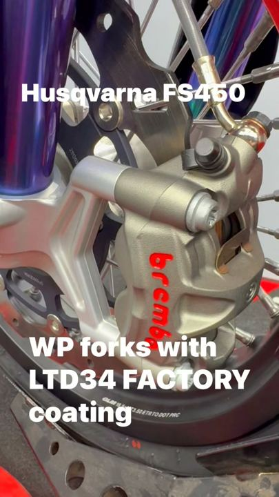
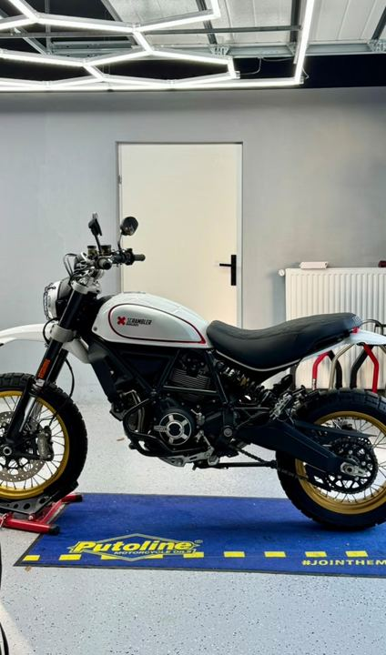

Serwis zawieszenia
Pełny przegląd amortyzatorów, widelców i wkładów: demontaż, weryfikacja zużycia, nowe uszczelnienia i olej, odpowietrzanie, kontrola na hamowni.
Serwisujemy, regulujemy, modyfikujemy i budujemy zawieszenia motocyklowe — od seryjnych turystyków po wyścigowe maszyny startujące w mistrzostwach. Każdą pracę weryfikujemy na hamowni zawieszeń.

Pełny przegląd amortyzatorów, widelców i wkładów: demontaż, weryfikacja zużycia, nowe uszczelnienia i olej, odpowietrzanie, kontrola na hamowni.
Ustawienie zawieszenia i geometrii pod wagę kierowcy, styl jazdy oraz przeznaczenie motocykla — drogę, trasę z pasażerem, tor lub off-road.
Sprężyny o właściwej sztywności, wkłady cartridge, kompletne amortyzatory. Poprawiamy seryjne komponenty tam, gdzie producent poszedł na kompromis.
Przygotowanie zawieszeń w specyfikacji torowej i wyścigowej — od konwersji seryjnych Öhlinsów po kompletne zestawy Maselli, Matris czy K-Tech.
Hamownia zawieszeń pokazuje charakterystykę tłumienia, temperaturę i histerezę. Widzisz czarno na białym, co zmieniło się po serwisie.
Pracujemy z zawodnikami i zespołami wyścigowymi, pomagamy dopracować setup podczas trackdayów i zawodów.

Każdy motocykl działa na tych samych zasadach: geometria podwozia, geometria układu napędowego względem środka ciężkości, balans i czucie kierowcy. Dopiero zrozumienie tych zależności daje kontrolę nad zachowaniem maszyny.



Olszynowa 1b, 05-092 Łomianki · pon.–pt. 18:00–21:00, sob. 11:00–18:00